Akoya
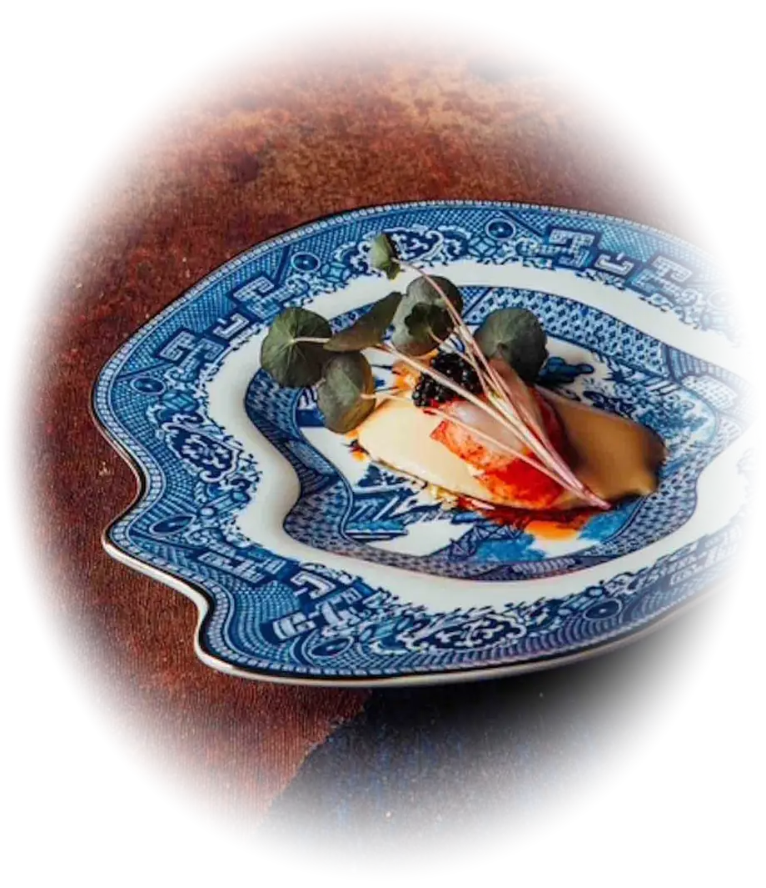
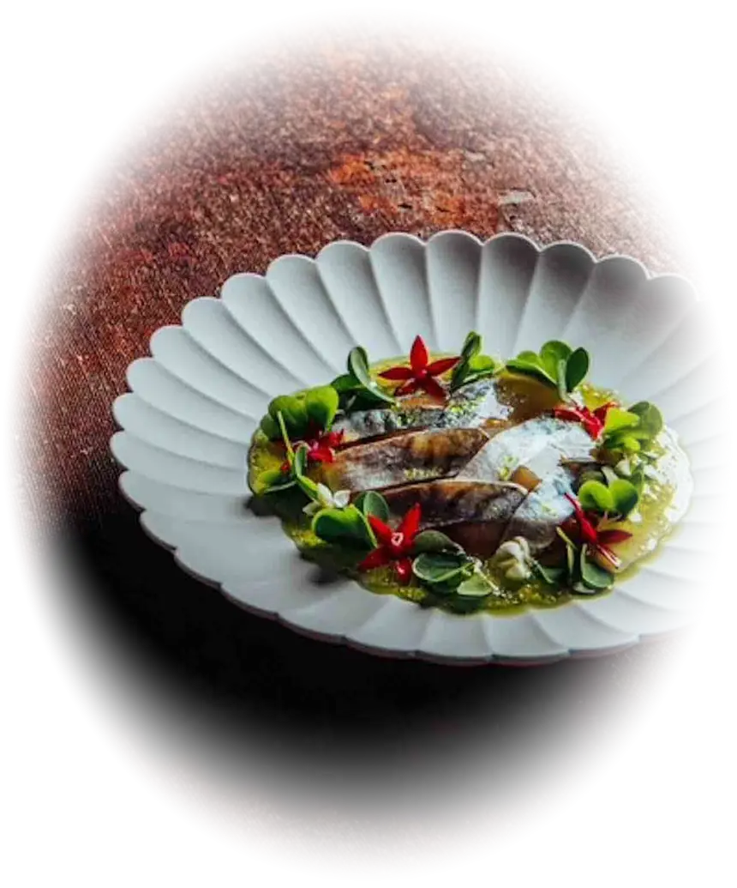
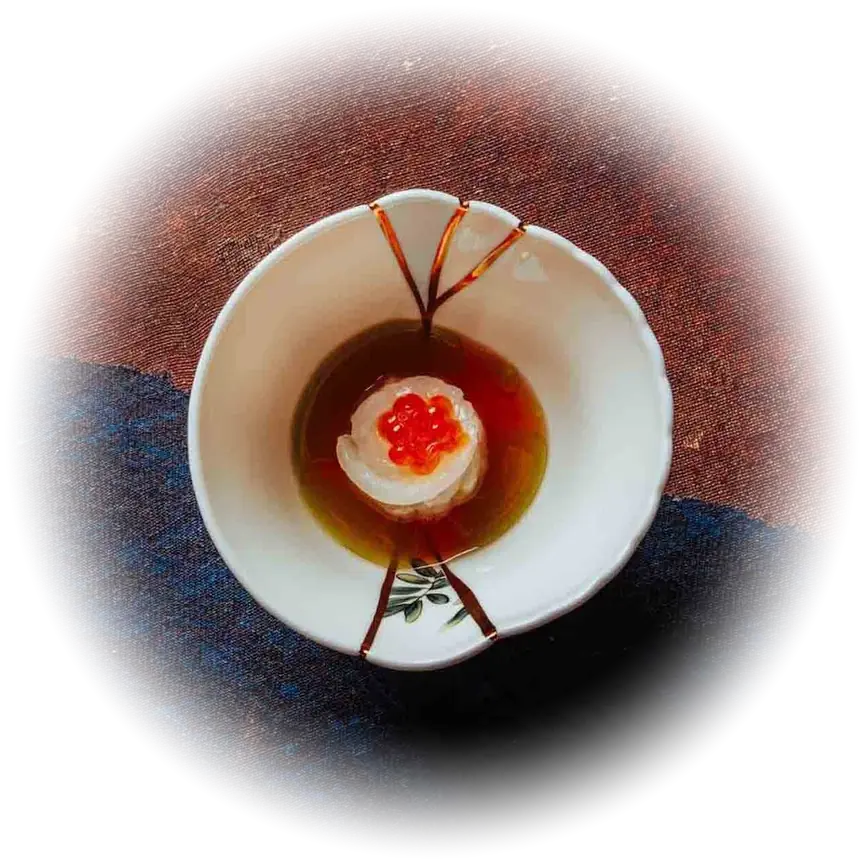
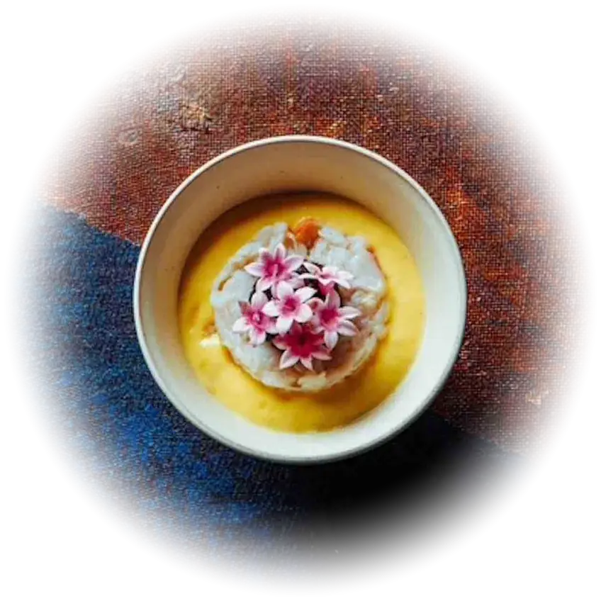
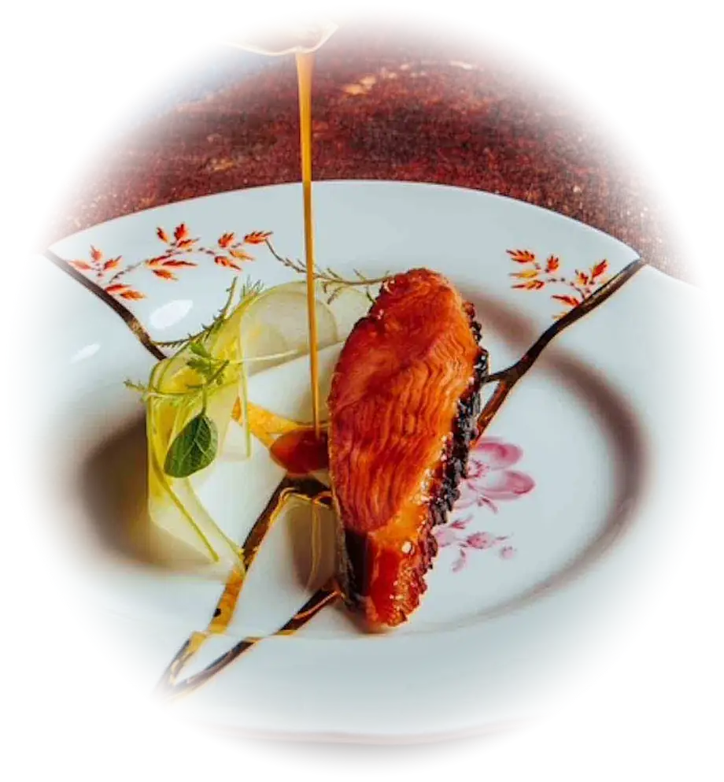
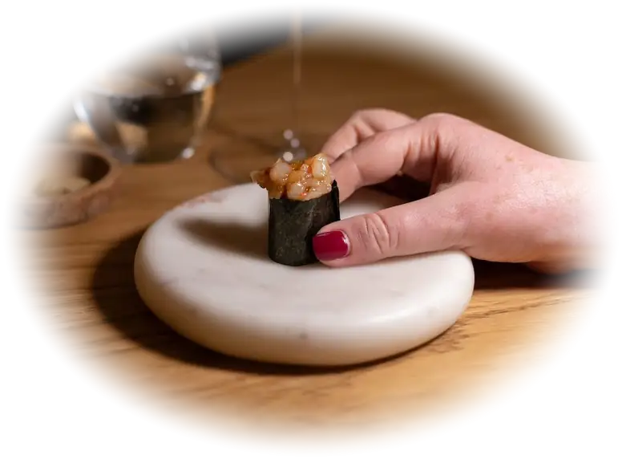
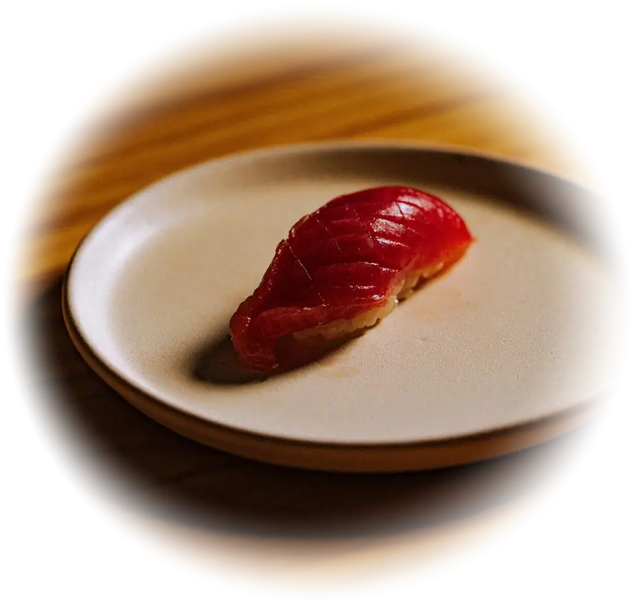
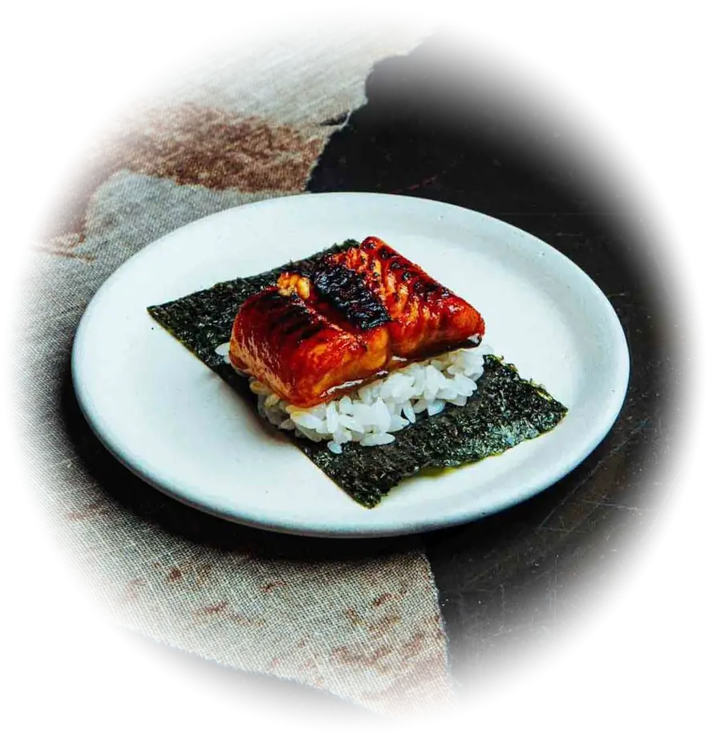
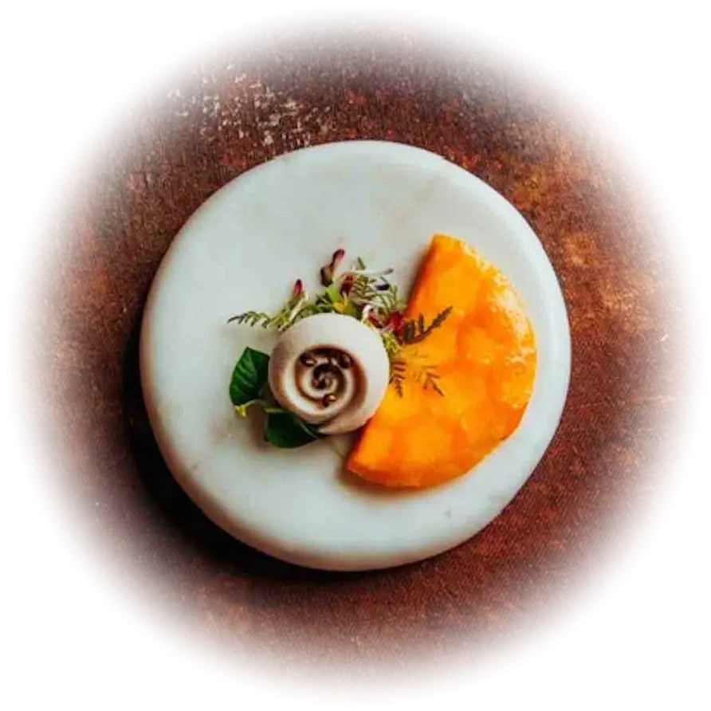
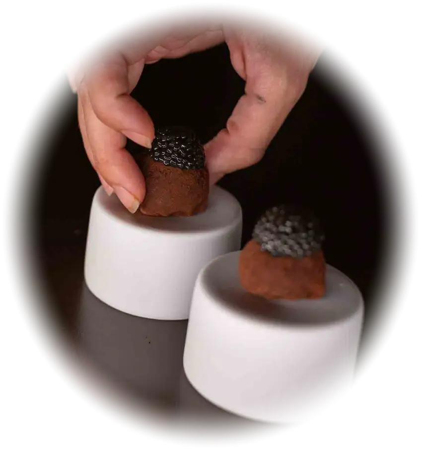
-
Astice Chawanmushi
Budino di dashi e kombu, astice scottato nel suo olio, uova di aringa affumicata.
-
Shime Saba
Sgombro marinato in kombu, aceto di riso e mirin. Il dashi al limone è versato davanti a voi.
-
Calamaro Somen
Calamaro tagliato in fili sottili, yuzu kosho e uova di salmone.
-
Granchio Shiitake
Shiitake al miso, bernese allo yuzu, granchio reale e caviale.
-
Anatra Yuzu
Petto d’anatra alla brace, mela verde, indivia e ponzu allo yuzu.
-
Gunkan Gambero
Gambero rosso di Mazara battuto al coltello, alga nori, estratto d’ostriche e lemongrass.
-
Nigiri Tonno
Tonno rosso ikejime, wasabi grattugiato al momento, un velo di salsa di soia.
-
Temaki Anguilla
Anguilla kabayaki passata sulla brace e laccata fino a caramellare.
-
Zucca
Raviolo di zucca, cioccolato bianco tostato e miso, gelato al pepe timut.
-
Mochi Cioccolato Caviale
Fondente al 70% e una punta di caviale.
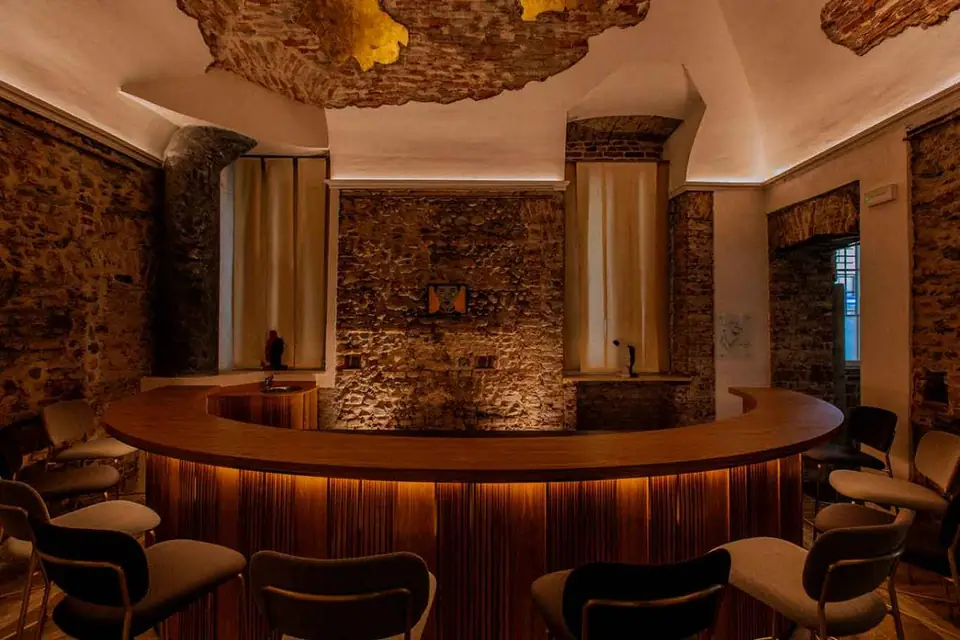
Dieci posti al banco.
Una stella Michelin, Guida 2027.
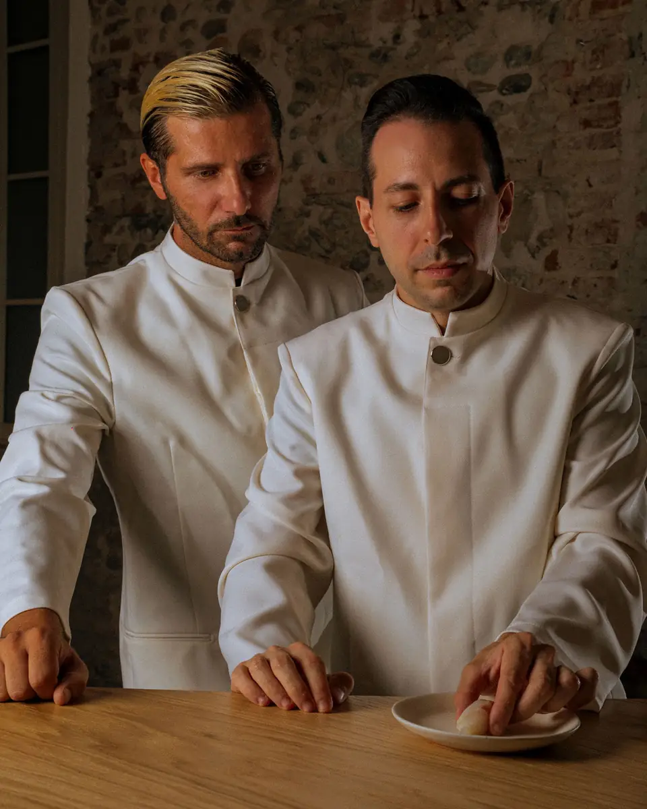
-
Il banco
Omakase Ma Kaiseki, 150 € bevande escluse. Da mercoledì a domenica alle 20:00, la domenica anche alle 12:30.
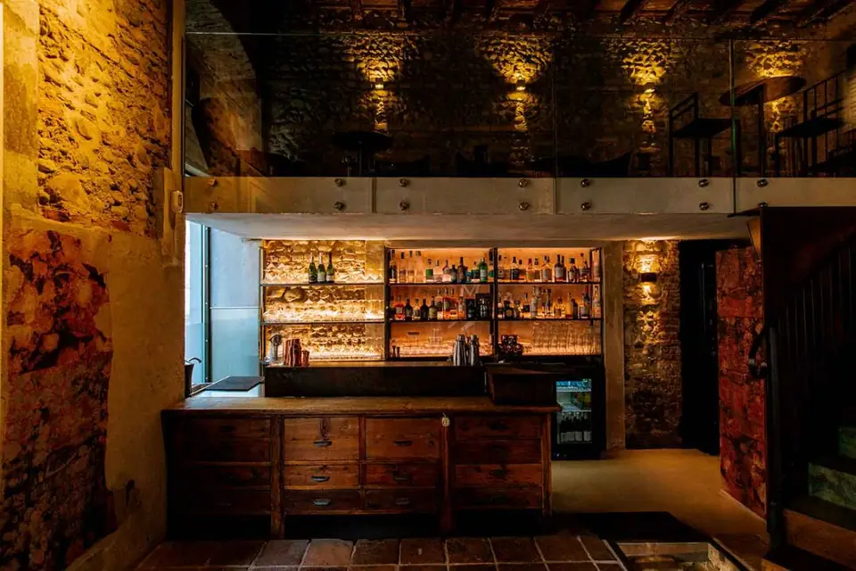
La lounge
Cocktail, vini, sake e piattini, dall’aperitivo al dopocena.
-
Bonjour Tokyo
Brunch giapponese, ogni domenica dalle 11:00 alle 14:00. Senza traduzioni.
-
Buono regalo